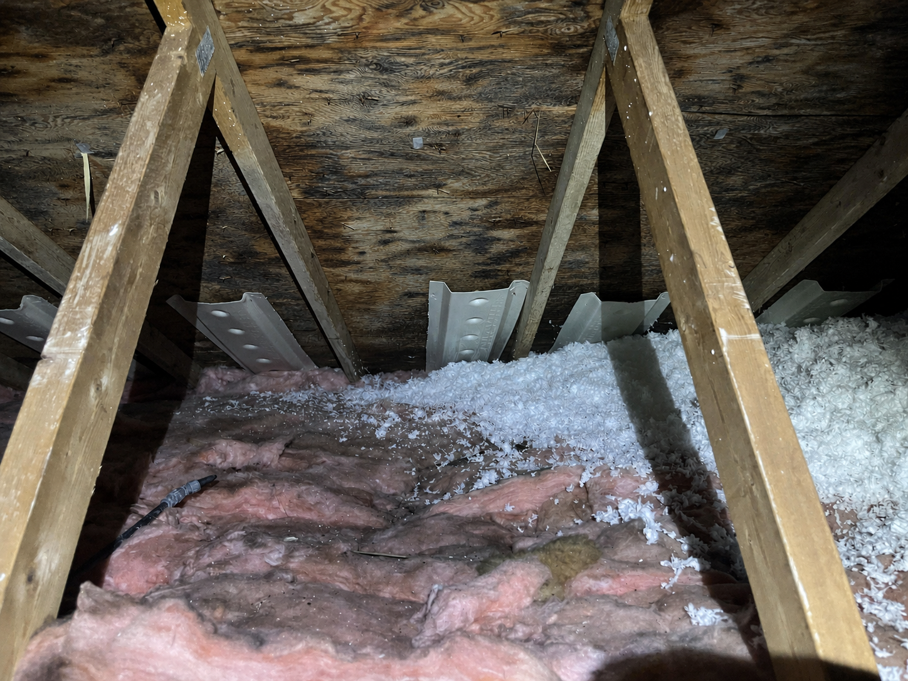
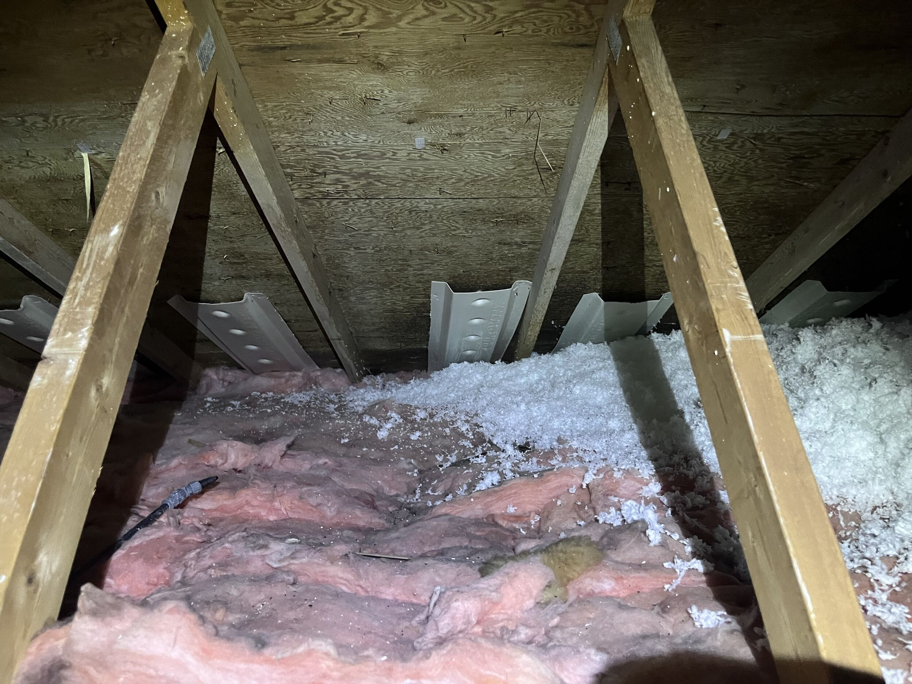
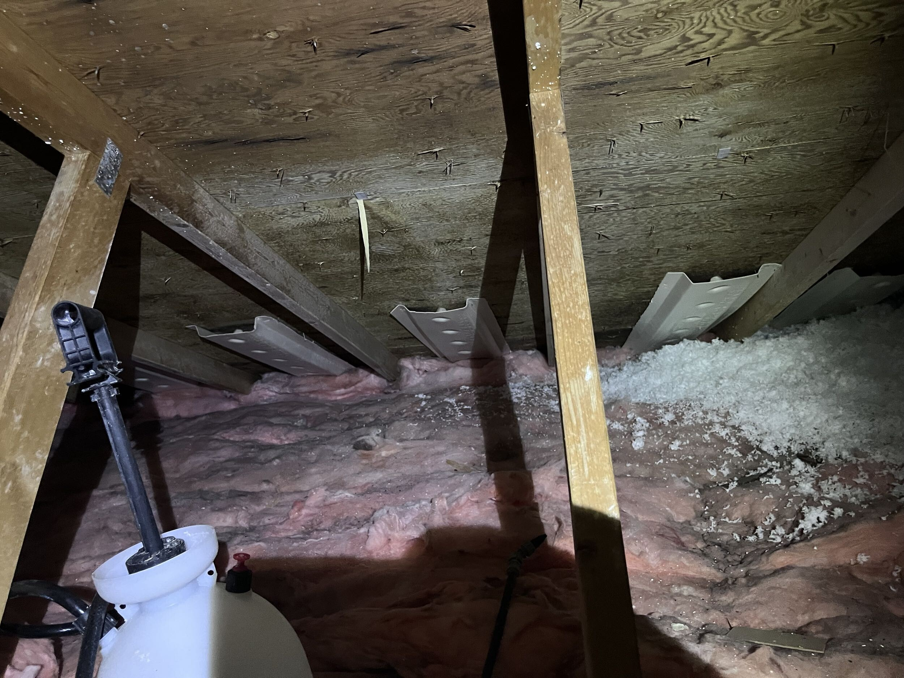

|
M
MiniMe Contracting Company Registered business name: Mini Home Energy Solutions |
Health & Safety Record
Photo Report HSR-4187-P
|
Before-and-after photographic evidence for remediation required to enable safe installation of a central ducted heat pump.
|
Site
|
Document Control
|
|
 BEFORE - July 7, 2026. Attic roof sheathing shows irregular dark mould staining and moisture discoloration above the planned HVAC work area. Adjacent insulation shows localized damp staining. Photograph captured before containment or treatment.
|
| Remediation Completion Evidence | HSR-4187-P |
|
 AFTER VIEW A - July 22, 2026. Treated sheathing and cleaned work area after HEPA vacuuming, fungicidal treatment and drying verification. View faces the planned air-handler platform.
|
 AFTER VIEW B - July 22, 2026. Adjacent bay and duct route after treatment. No visible active surface growth remains in the remediated work area.
|
| Alex Chen Health & Safety Remediation Lead Contractor representative |
July 22, 2026 Completion date |